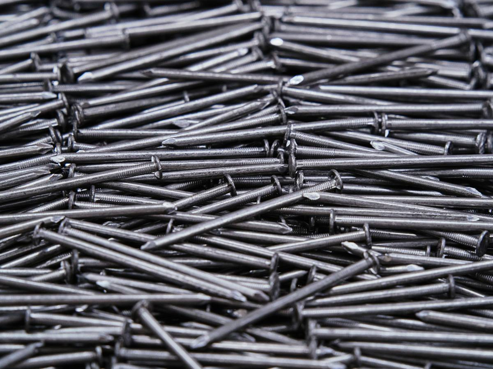
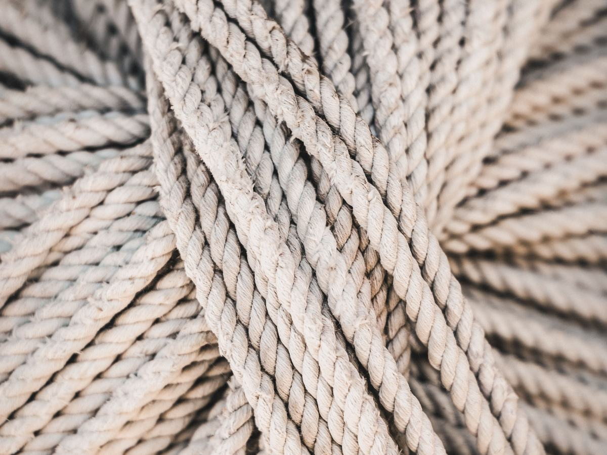
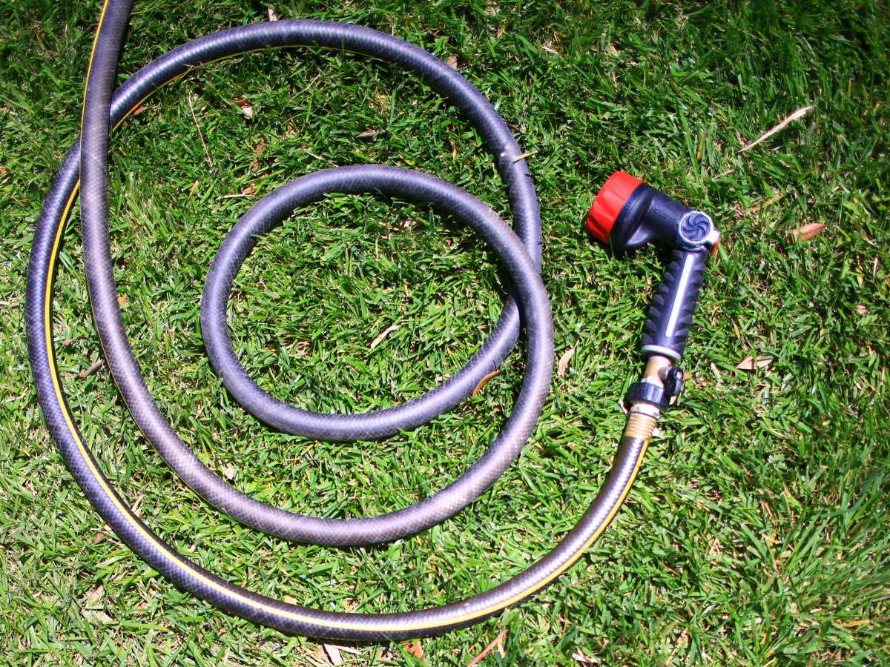
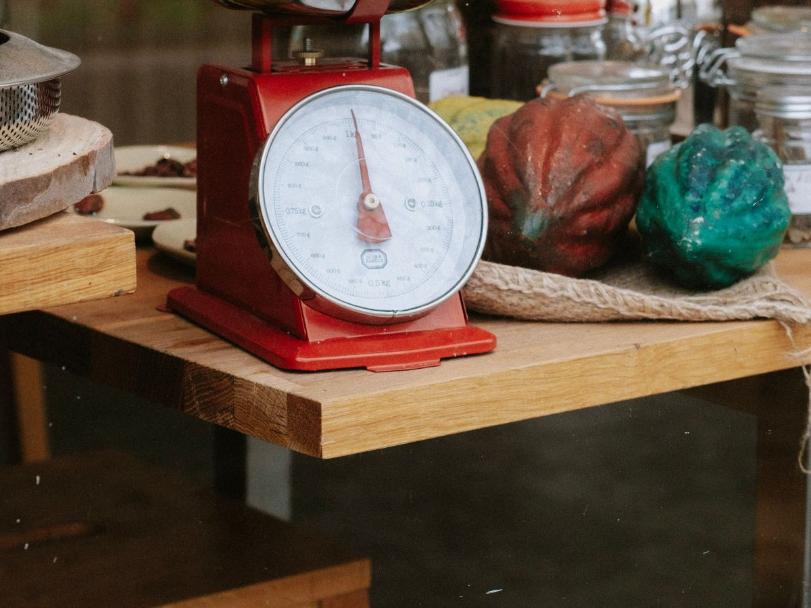
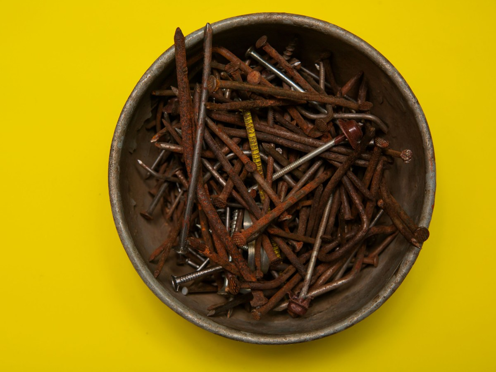
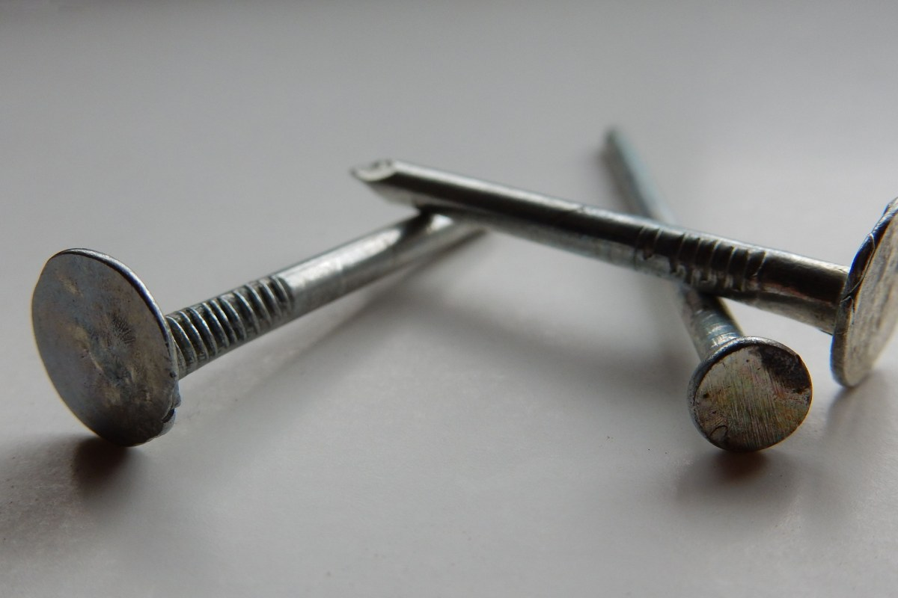
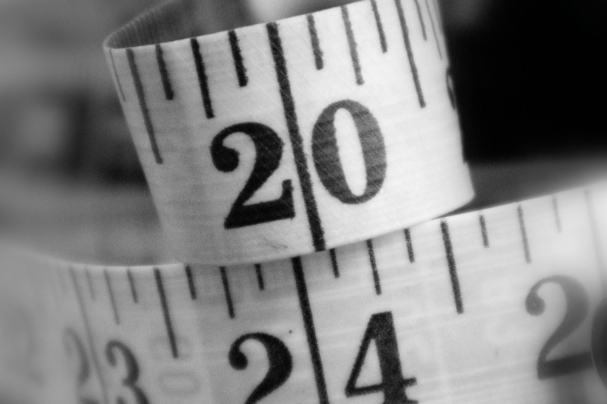
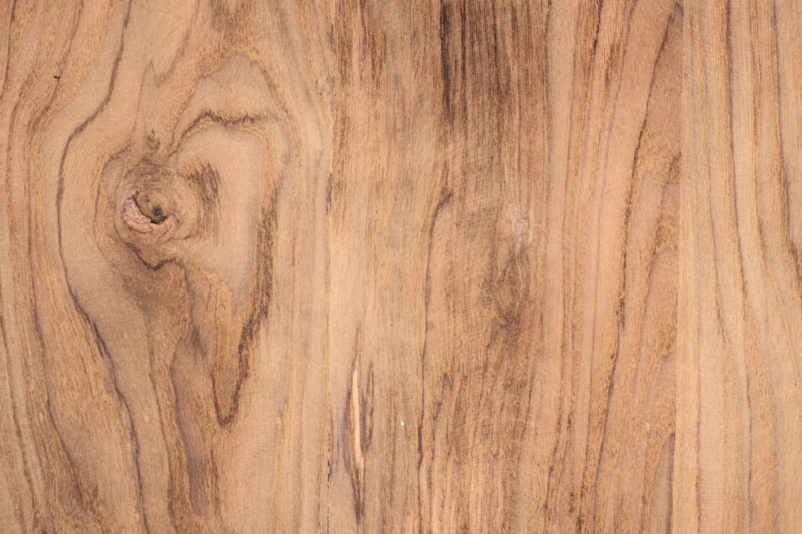

Puente Alto · Luis Matte Larraín 2162
Ferretería Los Nogales.
180 reseñas con 4,6, y te venden lo justo: por kilo, por metro, por litro.
- 180reseñas en Google
- 4,6de promedio
- 7días abierta; el domingo de 10 a 14
- 0webs: Google la escribe «Feterrería»
Por kilo y por metro
Lleva lo que necesitas, no la caja
kg
Por kilo
Clavos, tornillos y grampas.
Desde un cuarto
m
Por metro
Cable, cadena, manguera y cuerda.
Desde un metro
L
Por litro
Pintura y diluyente.
Desde medio litro
saco
Por saco
Arena y gravilla.
Desde un saco
Pídelo así: qué, cuánto y para qué. «Dos metros de cadena para un portón.»
Productos y mínimos de ejemplo: lo que se vende suelto lo confirma el mesón.
Un cuarto de kilo de clavos también es una compra.
Qué hay
Del clavo a la cadena
-

Por kilo
Clavos y tornillos
Se pesan en el mesón.
-

Por metro
Cuerda
El largo que necesites.
-
Por metro
Cadena
Para el portón o el candado.
-

Por metro
Manguera
Para el patio.
-

Surtido
Lo que no esperabas
Hasta un destapador de aire comprimido, cuenta una reseña.
-

Despacho
Entrega a domicilio
Así figura en su ficha.
Familias de ejemplo, salvo el destapador y el despacho; el surtido real, por teléfono.
«Saben cómo ayudarte en lo que buscas y dan recomendaciones».
Una reseña de Google, sobre los dos que atienden
El mesón
Clavos, cadena y nogal



Fotos de referencia: ninguna es del local.
Dónde está
Luis Matte Larraín 2162, Puente Alto
- Teléfono
- (2) 2874 4883
- Lunes a viernes
- 9:00–14:00 y 15:30–18:30
- Sábado
- 9:00–14:00
- Domingo
- 10:00–14:00
Hay otra «Ferretería Nogales» en Google: ésta es la de Luis Matte Larraín 2162.
Luis Matte Larraín 2162 Abrir en Google Maps
Para la Ferretería Los Nogales
Qué es real y qué falta
Lo verificado
Dirección, teléfono, horario, el despacho y lo que dicen sus reseñas, al 14-09-2026.
Lo de ejemplo
Lo que se vende suelto, los mínimos, las familias de productos y las fotos.
Lo que falta
Que la encuentren por su nombre: en Google figura «Feterrería Los Nogales» y no tiene web; ferreterialosnogales.cl ni siquiera está registrado.